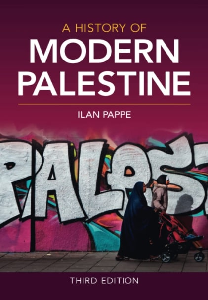
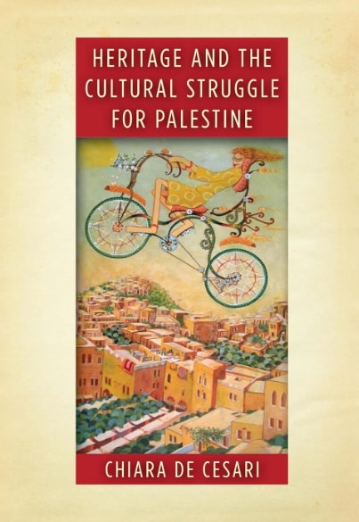
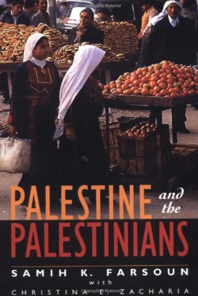
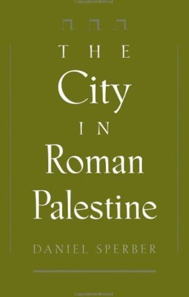

Concordia University Palestinian Book Collection
Explore a collection of Palestinian literature available at Concordia University. These books offer rich insights into Palestinian history, culture, and heritage.
Available Books
-

A History of Modern Palestine
Author(s): Ilan Pappé
Format: Print Book
Call Numbers: DS 125 P298 2022 - Webster Library - Books -

Colonizing Palestine : the Zionist left and the making of the Palestinian Nakba
Author(s): Arīj Ṣabbāgh-Khūrī
Format: Print Book
Call Numbers: DS 126 S23 2023 - Webster Library - Books -
Dear Palestine: A Social History of the 1948 War
Author(s): Shay Hazkani
Format: Print Book
Call Numbers: DS 126.9 H39 2021 WEB - Webster Library - Books -
Driving in Palestine
Author(s): Rehab Nazzal
Format: Print Book
Call Numbers: TR 659.8 N545 2023 - Webster Library - Books -

Heritage and the cultural struggle for Palestine
Author(s): Chiara De Cesari
Format: Print Book
Call Numbers: DS 110 W47D4 2019 - Webster Library - Books -
Literature, partition and the nation-state : culture and conflict in Ireland, Israel and Palestine
Author(s): Joe Cleary (Joseph N.)
Format: Print Book
Call Numbers: PR 8722 N27C54 2002 - Webster Library - Books -
Native vs. settler : ethnic conflict in Israel/Palestine, Northern Ireland, and South Africa
Author(s): Thomas G Mitchell
Format: Print Book
Call Numbers: GN 496 M58 2000 - Webster Library - Books -
Ottoman brothers : Muslims, Christians, and Jews in early twentieth-century Palestine
Author(s): Michelle U Campos
Format: Print Book
Call Numbers: DS 125 C26 2011 - Webster Library - Books -
Overthrowing Geography : Jaffa, Tel Aviv, and the struggle for Palestine, 1880-1948
Author(s): Mark LeVine
Format: Print Book
Call Numbers: DS 110 T357L42 2005 - Webster Library - Books -

Palestine
Author(s): Noam Chomsky, Ilan Pappé, Frank Barat, Nicolas Calvé
Format: Print Book
Call Numbers: DS 119.76 C49214 2016 - Webster Library - Books -

Palestine and the Palestinians : a social and political history
Author(s): Samih K Farsoun, Naseer Hasan Aruri
Format: Print Book
Call Numbers: DS 119.7 F336 2006 - Webster Library - Course Reserve Room (3 hour loan) -
Palestine/Israel : peace or apartheid : occupation, terrorism, and the future
Author(s): Marwān Bishārah
Format: Print Book
Call Numbers: DS 119.76 B55 2002 - Webster Library - Books -
Palestinian Politics After the Oslo Accords : resuming Arab Palestine
Author(s): Nathan J Brown
Format: Print Book
Call Numbers: JC 311 B766 2003 - Webster Library - Books -
Statecraft by Stealth : secret intelligence and British rule in Palestine
Author(s): Steven Wagner
Format: Print Book
Call Numbers: DS 126 W26 2019 - Webster Library - Books -
The Case for Palestine : an international law perspective
Author(s): John B Quigley
Format: Print Book
Call Numbers: DS 119.7 Q722 2005 - Webster Library - Books -

The City in Roman Palestine
Author(s): Daniel Sperber
Format: Print Book
Call Numbers: DS 111.1 S74 1998 - Webster Library - Books -

The Hundred Years' War on Palestine : a history of settler colonialism and resistance, 1917-2017
Author(s): Rashid Khalidi, Henry Holt and Company
Format: Print Book
Call Numbers: DS 119.7 K4279 2020 - Webster Library - Books -
The Palestine-Israel Conflict : a basic introduction
Author(s): Gregory Harms, Todd M Ferry
Format: Print Book
Call Numbers: DS 119.7 H37625 2008 - Webster Library - Books -
The Politics of Art : dissent and cultural diplomacy in Lebanon, Palestine, and Jordan
Author(s): Hanan Toukan
Format: Print Book
Call Numbers: N 72 P6 T68 2021 WEB - Webster Library - Course Reserve Room (3 hour loan) -
The War for Palestine : rewriting the history of 1948.
Author(s): Eugene L Rogan, Avi Shlaim
Format: Print Book
Call Numbers: DS 126.9 W37 2007 - Webster Library - Books